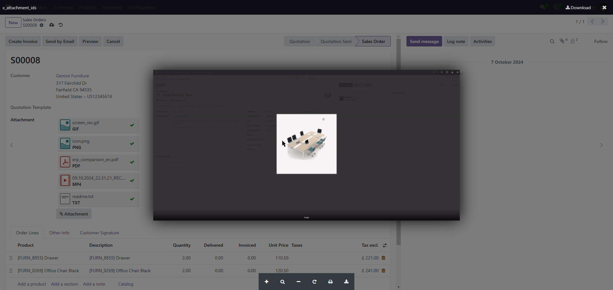
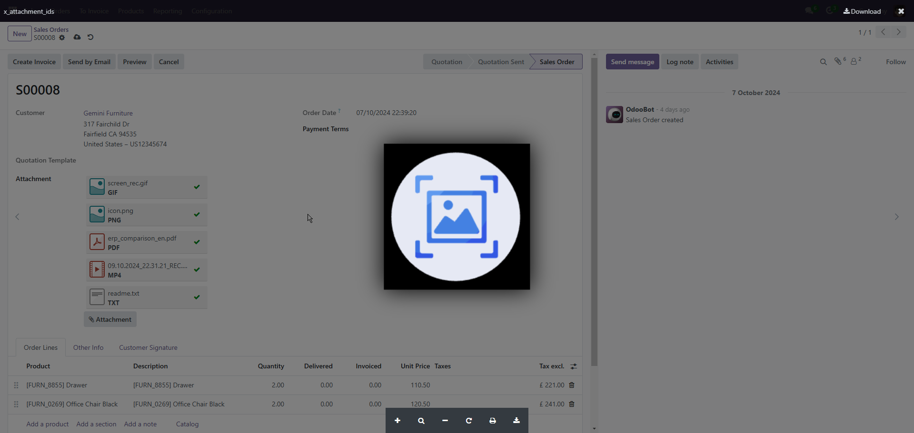
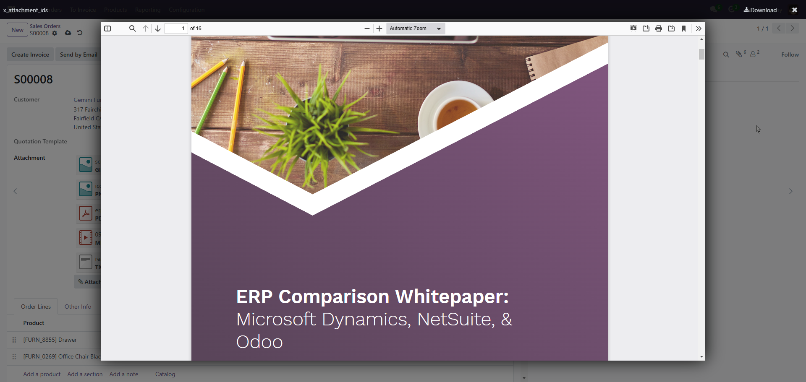
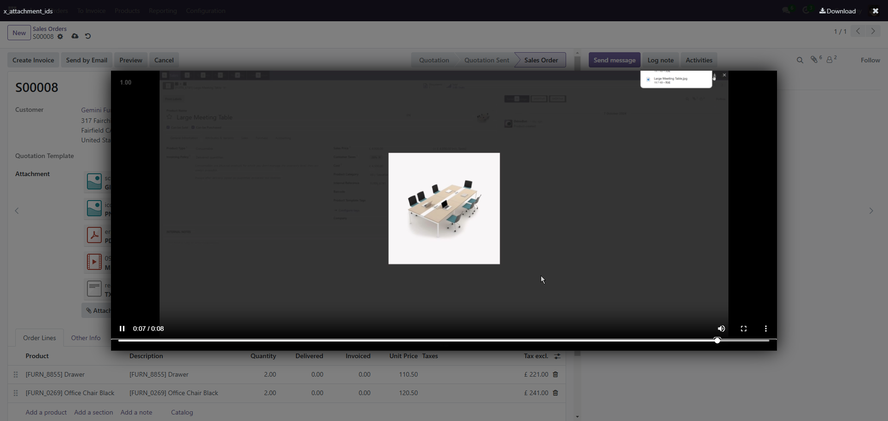

Attachments Preview
This widget supports opening a popup to preview files on the current page.
Supported file types: Image, GIF, Video, PDF, TXT.
Overview
When this module is installed, the preview feature will be enabled for fields set with widget="many2many_binary".



